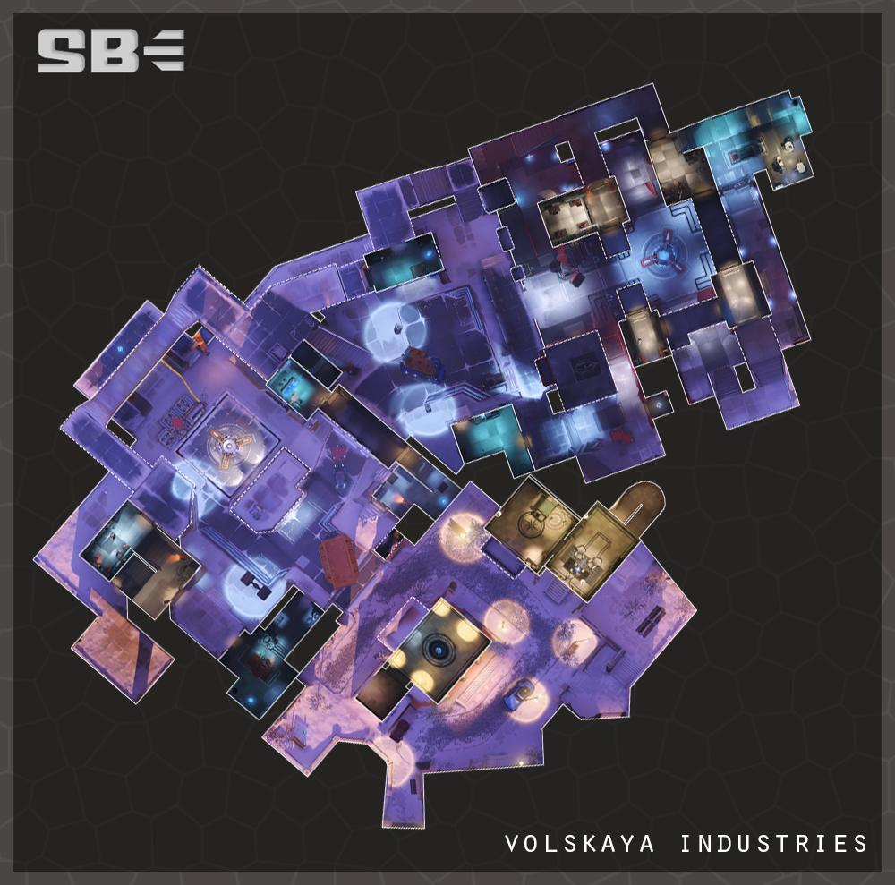

伏斯凱亞工業 Volskaya Industries 回首頁
回首頁
俄
羅斯是智械危機中受打擊最嚴重的國家之一，但在重建過程
中，它掀起了機械化勞動力振興的浪潮，進入了快速增長的
時期。然而，在最近長期處於休眠狀態的西伯利亞大陸的襲
擊之後，俄羅斯已經恢復了戰爭的立足點，用伏斯凱亞工業
所開發和生產的大型人工駕駛的西維塔古機甲保護其閃閃發
光的城市。
伏斯凱亞工業是一家參與西維塔古機甲生產的俄羅斯公司，
是俄羅斯首屈一指的反智械安全部隊。卡緹雅․伏斯凱亞是
其首席執行官。總部設在聖彼得堡，其寒冷的機械工程是衝
突和企業背後的溫床。
在最近的時期，鑑於來自西伯利亞智械的侵略性增加，該公
司增加了產量。在吉列爾莫․波特羅辭去光明能源公司的CEO
後不久，伏斯凱亞工業在其網絡中遇到了安全漏洞。這是由
駭影掌握的，她能夠關閉公司的安全系統，因為她，奪命女
和死神（所有利爪組織特工）對該公司的機械工廠進行突襲
，以暗殺卡緹雅。卡緹雅倖存下來，但是有許多人被殺，至
少有一個機甲被摧毀。
